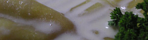

Kürbisravioli
5 von 6eine halbe zwiebel und etwa 200gr geraffelter kürbis gut andämpfen. mit curry, paprika, salz und pfeffer würzen und genügend mascarpone dazu geben. die abgekühlte masse auf dem teig verteilen und verschliessen. ca. 2 minuten in siedendem wasser
kochen.
